PASIA INTERNSHIP
ACCOMPLISHMENTS
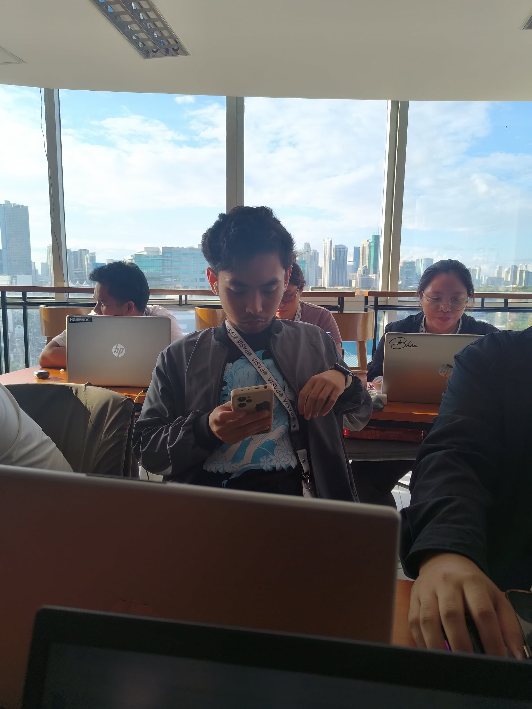
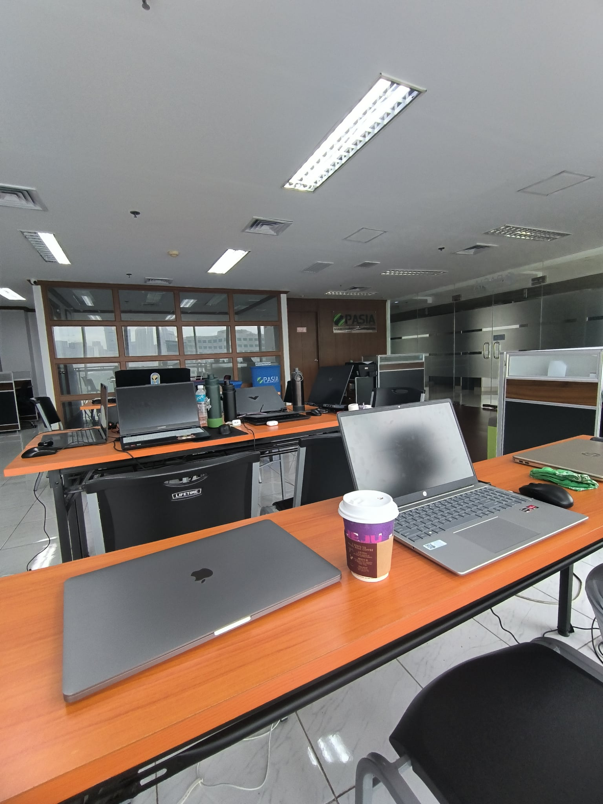
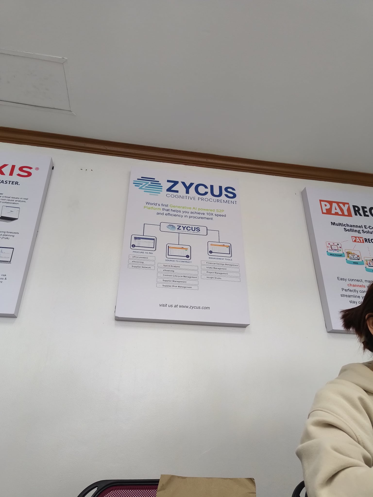
Tasks and Responsibilities During My Internship
I mapped out DTI's supply chain processes and applied insights from meetings directly into our project
documentation and planning.
I standardized and categorized inventory items for both MDC and ALI, helping create a more consistent
and organized data framework for each.
I researched and compiled contact information for companies in the Subic area to support outreach for an
upcoming seminar.
I helped gather eBooks and reference materials on supply chain digitalization to support the team's
research efforts.
I handled email communications for the ALI supplier survey, coordinating outreach to suppliers.
I authored a concept paper for DTI, outlining project objectives and strategies, and revised it based on
feedback from my supervisor.
As a Computer Engineering Student
Even though most of my given tasks weren't directly aligned with computer engineering, I used my technical
knowledge to find ways to streamline my work, applying Python scripting to automate tasks that were
originally manual.
I developed a Python script using smtplib to automate the sending of bulk emails, streamlining what used
to be a manual, repetitive task.
I built automation scripts using pandas and other Python libraries to categorize and process supply
chain data more efficiently.
I strengthened my programming skills by translating manual business processes into automated,
code-based solutions.
I saw firsthand how automation reduces human error and saves time in data-heavy tasks like
categorization and sending emails.
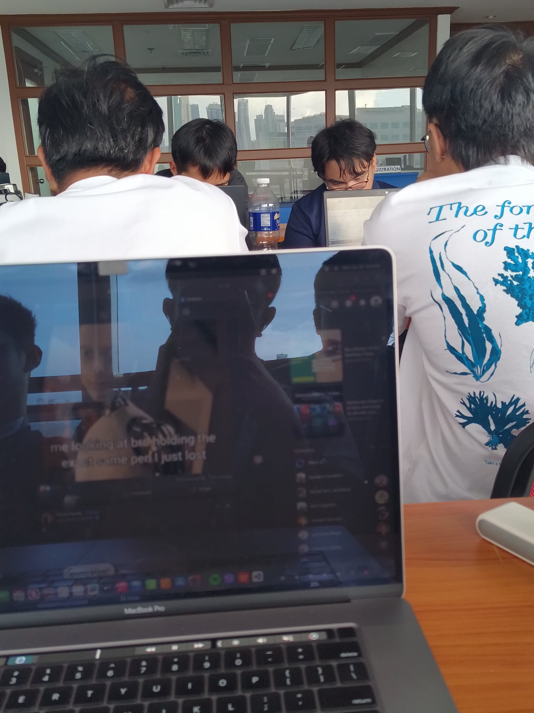
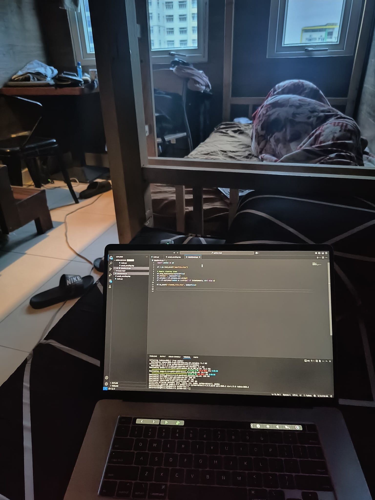
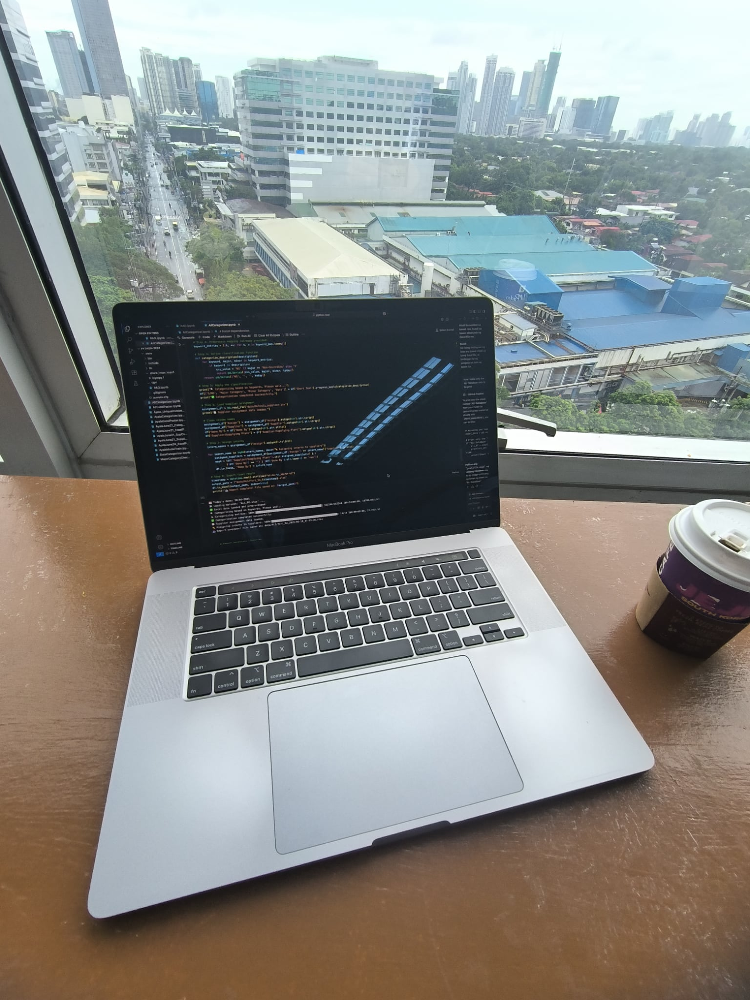
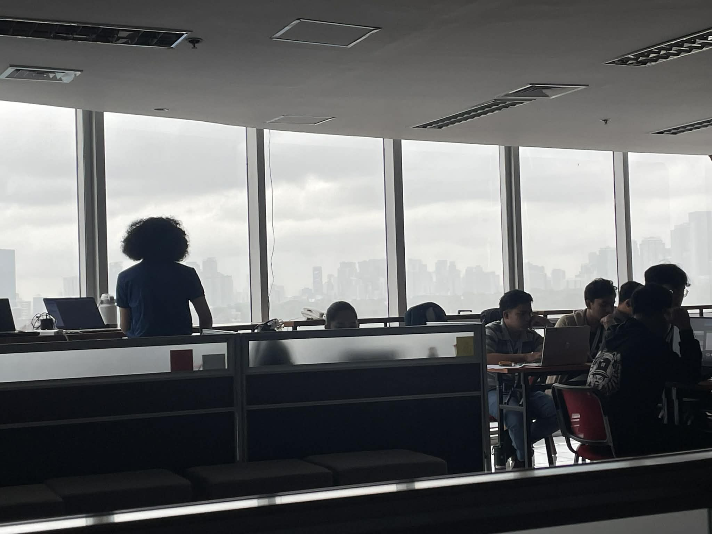
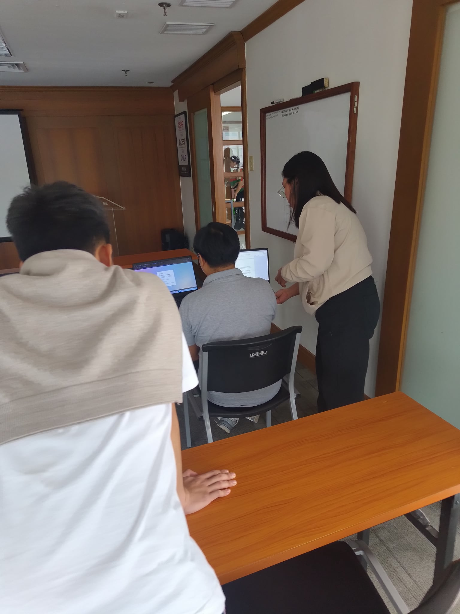
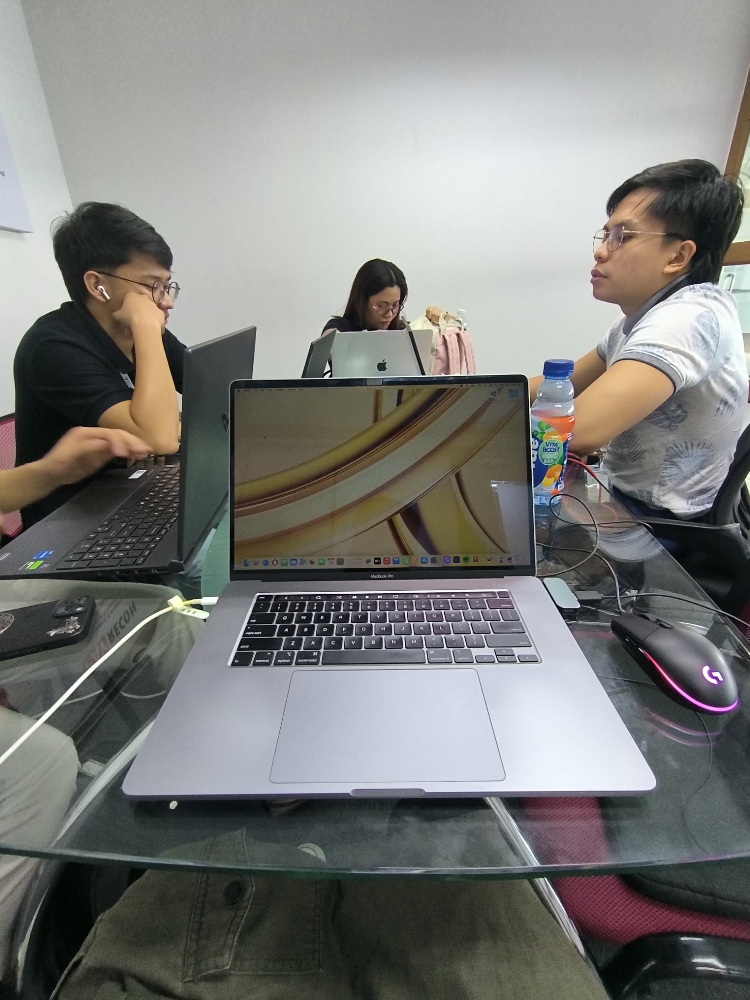
Why I Love Automation
I realized that automation isn't just about saving time — it's about freeing up mental space to focus on
more meaningful, higher-level problems instead of repetitive tasks.
I discovered a genuine sense of fulfillment in seeing a script run and instantly accomplish what used to
take hours of manual work.
I learned that even small inefficiencies, when automated, can lead to significant improvements in accuracy
and consistency over time.
I found myself naturally drawn to spotting repetitive processes and thinking, "this could be automated" —
which made me appreciate how much I enjoy problem-solving through code.
I came to understand that automation reflects my strength and passion as a computer engineer — turning
manual, error-prone tasks into reliable, efficient systems.
Conclusion
Overall, my internship at PASIA gave me a well-rounded experience that went beyond just completing assigned tasks. While much of the work — supply chain mapping, item standardization, research, and communication — wasn't directly tied to my field as a computer engineer, it gave me valuable insight into real-world business operations and taught me how to adapt and contribute meaningfully in any environment. More importantly, it reaffirmed my passion for automation and technology. By applying Python scripting to streamline manual processes, I was able to bring value to the team while also growing as a computer engineer. This internship not only strengthened my technical and professional skills but also gave me clarity on the kind of work I genuinely enjoy and want to pursue moving forward.
GET IN TOUCH WITH PAULO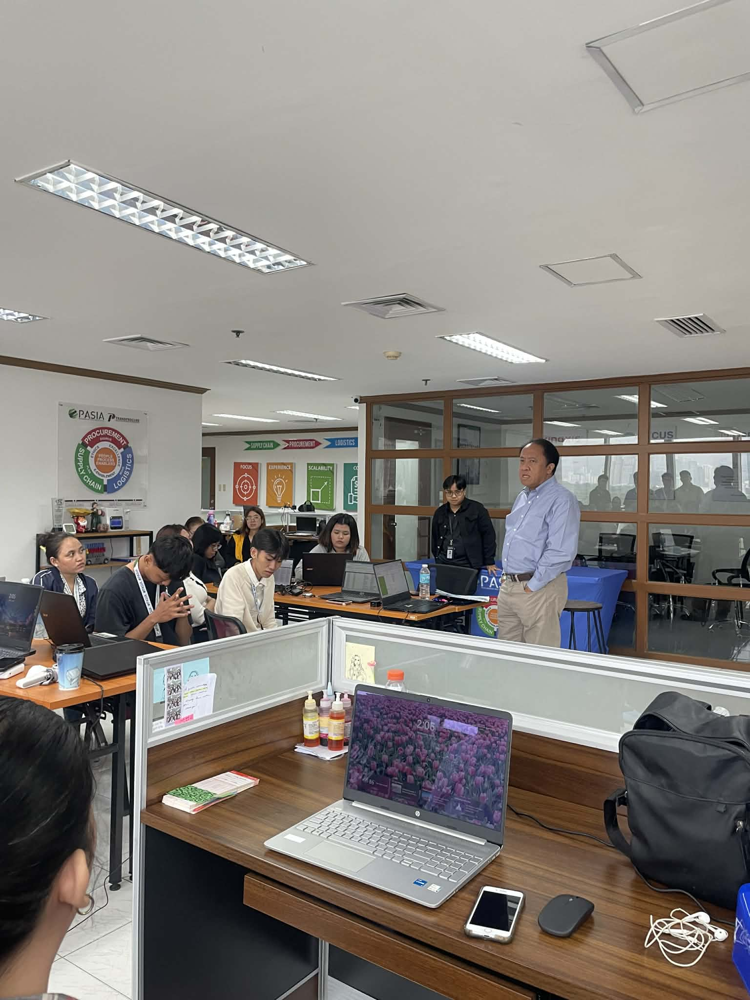
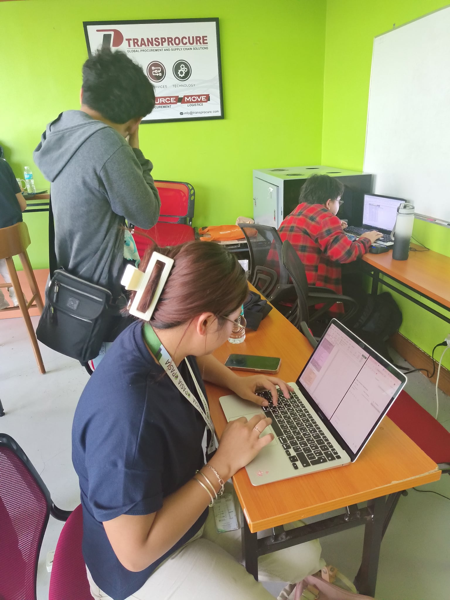
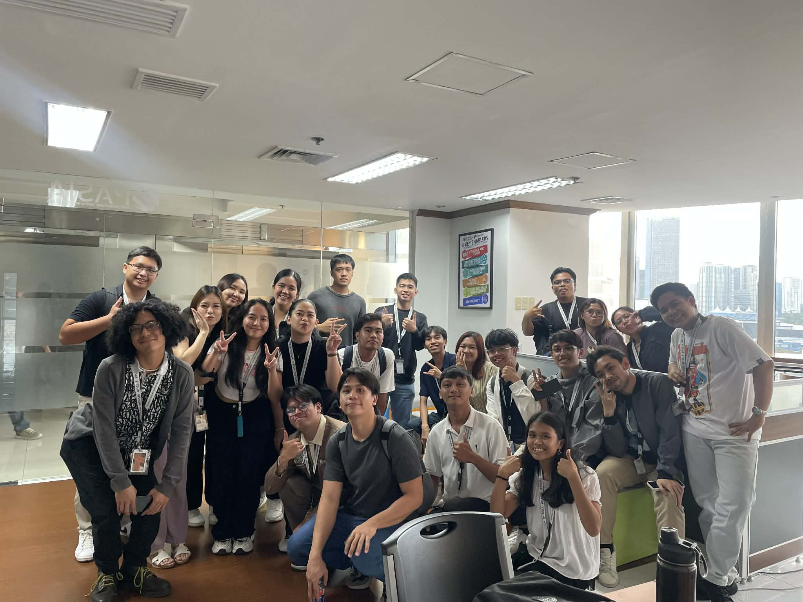